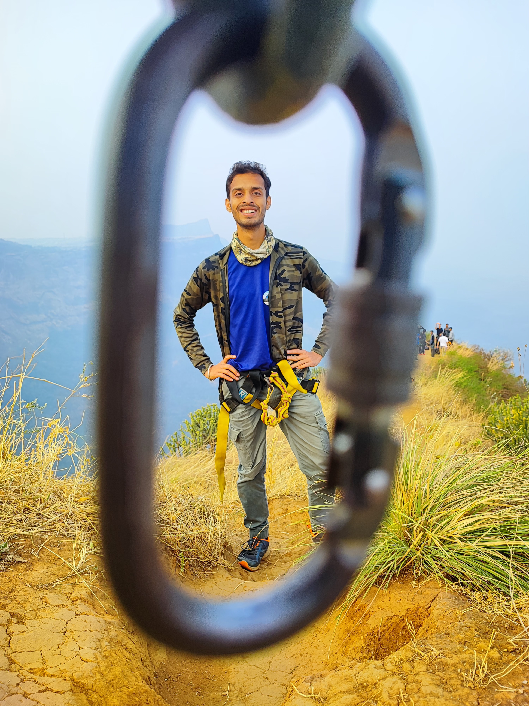
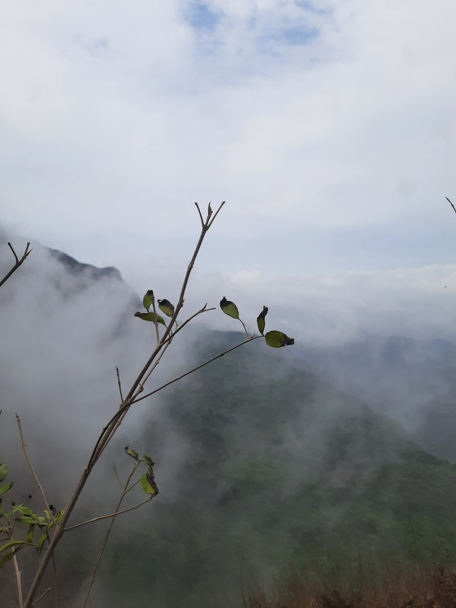
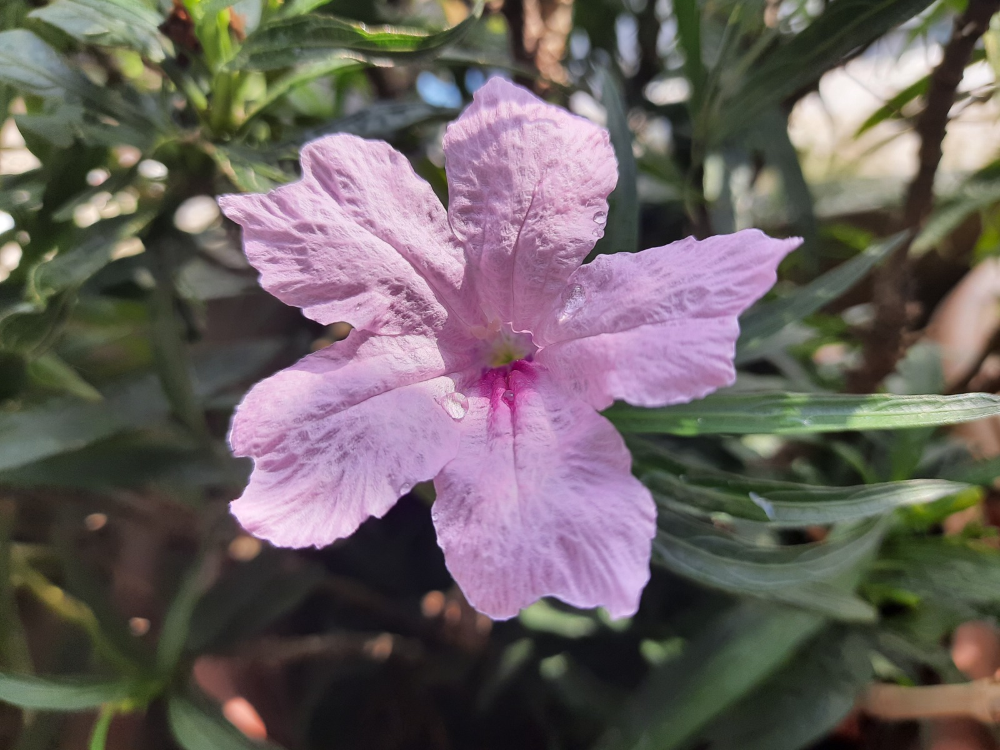
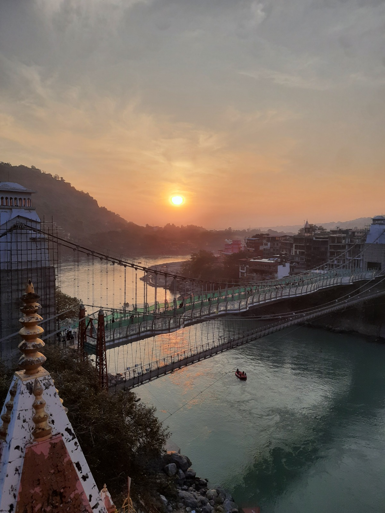
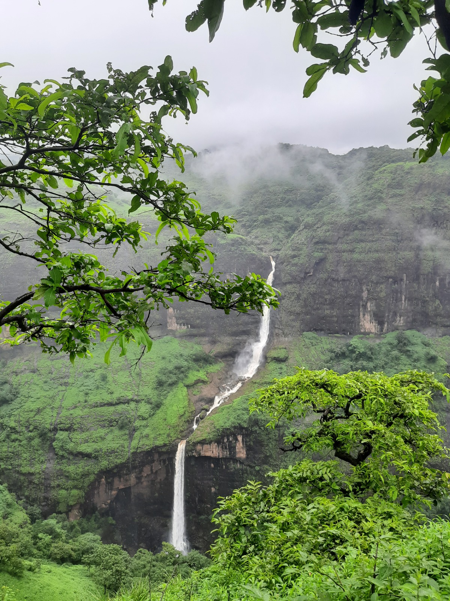
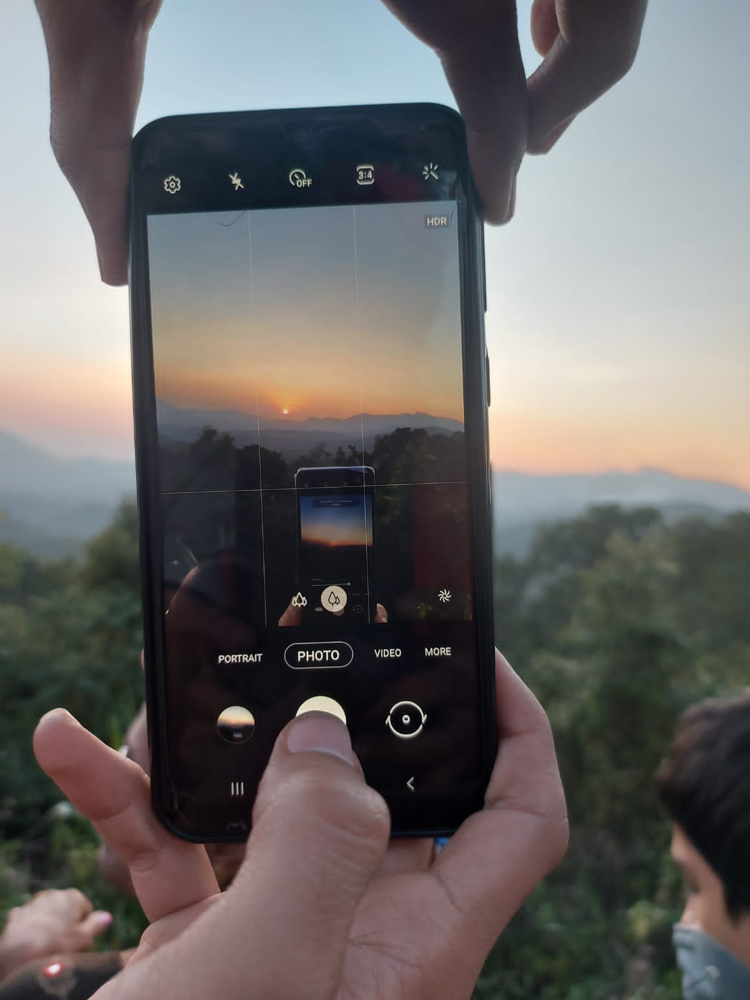

Nature Photography Portfolio
Into the Mist
Where silence speaks in the language of fog and ancient stone.
Explore Collections01 / 04
Where silence speaks in the language of fog and ancient stone.
Explore Collections
I'm Atharv Ghodki — a nature photographer based in Pune, Maharashtra, wandering the Sahyadris, the Ganges, and everywhere the horizon calls.
My camera is a notebook. Every frame I make is a sentence in a story the landscape is already telling. Most of these stories are captured with simple tools and patient eyes — a reminder that the photograph always begins long before the camera. I wait for the fog, I sleep in the rain, I stay long after others leave — because the best light almost never arrives on time.
My work wanders through the monsoon trails of the Sahyadris, the timeless ghats of Varanasi, the forests of Madhya Pradesh, the Himalayan calm of Rishikesh, and the fleeting moments hidden in everyday travel.
The earth does not belong to us. We belong to the earth — and a photograph is just a way of remembering that debt.
— Atharv Ghodki
"This frame was captured after waiting 90 minutes for the fog to partially clear. I was camped at 3,800 metres, fingers too cold to feel the shutter, watching the valley below breathe in and out with cloud cover. Then — for just forty seconds — a window opened. This is what I saw."





"Not all who wander are lost — some are just waiting for the right light."
Available for commercial collaborations & editorial assignments
Whether you're an editor looking for editorial work, a brand seeking authentic nature imagery, or simply a fellow traveller wanting to talk light — my inbox is open.